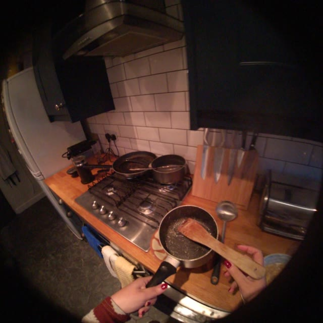
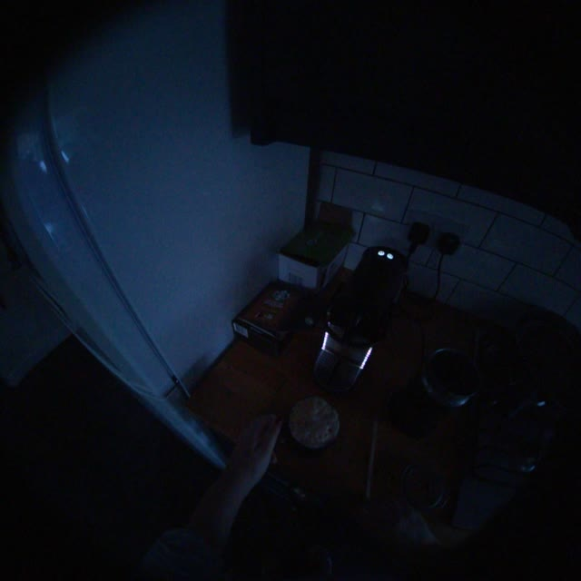
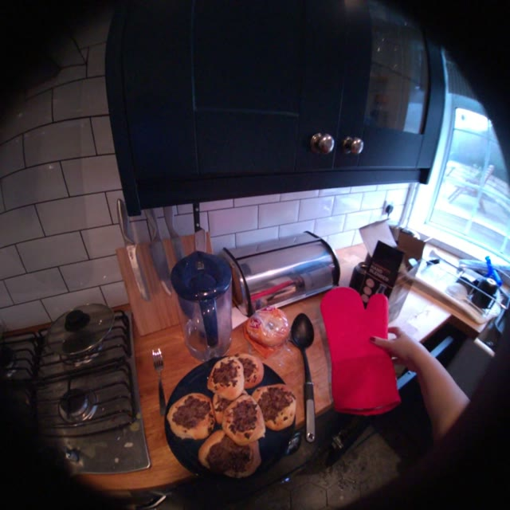

Everyday scenes. Questions grounded in 3D object annotations. Frames from three HD-EPIC sequences used in this pilot.
The benchmark
From seeing objects to tracking change
Understanding an egocentric video requires more than recognizing what is in a frame. It also requires following where objects move, how their relationships change, and what remains visible over time. This pilot turns HD-EPIC scene and object annotations into controlled questions with explicit temporal intervals and geometric evidence. An affordance-aware extension adds questions about object function, fixture compatibility, and interaction readiness.
20
Annotated video IDs
220
Geometry questions
233
Affordance questions
Counts describe the current benchmark exports, not evaluation results or the size of the full HD-EPIC dataset.
Compare the sampled frames, then reveal the annotation-derived answer. Frames provide visual context; answers come from the stored object tracks.
Start 101.7 s

End 758.6 s
01 Object motion
Did spatula move substantially between t=101.7s and t=758.6s?
Sequence P01-20240202-161948
Reveal answer & evidence
Yes
The stored endpoint displacement is 1.293 m, exceeding the geometry pilot’s 0.25 m motion threshold.
Start 13.4 s

End 145.6 s
02 Relation change
Did mug become closer to or farther from center_piece across the motion interval?
Sequence P01-20240203-093333
Reveal answer & evidence
Farther
The stored distance increases from 0.488 m to 2.080 m between the annotated endpoints.
Start 20.1 s

End 128.6 s
03 Visibility over time
Was red_glove visible during the interval from t=20.1s to t=128.6s?
Sequence P01-20240203-152323
Reveal answer & evidence
Yes
The benchmark records 8 annotation samples. These establish sampled visibility, not continuous visibility throughout the interval.
Question wording and answers are preserved from the geometry export. Object identifiers follow the annotations; the displayed frames are sampled at the question’s start and end times.
How it works
Annotations → tracks → questions
01
Collect annotations
Read scene and object movement metadata from HD-EPIC and select object tracks for each sequence.
02
Measure change
Use timestamped 3D positions to compute displacement, relative position, and changes in distance.
03
Ask and evaluate
Export questions, answers, and evidence. Evaluate text baselines or sample video frames for VLMs.
The geometry export covers static spatial relations, object motion, relation change, visibility, and historical updates. This is an annotation-driven pilot; sparse samples and coordinate conventions affect how its answers should be interpreted.
Video frames and source annotations are from HD-EPIC (Perrett et al., CVPR 2025). Please follow the source dataset’s attribution and usage terms. This page describes a separate benchmark pilot built on that dataset.